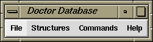

Doctor Database (which is available from the gap4 Edit menu) is used to make arbitrary changes to the database. It should be extremely unlikely that is use will be required, and if so, is for experts only. Very few checks are performed on the user's input and there are few limitations on what can be done. Consequently this option should never be used without first making a backup using "Copy database". See section Making Backups of Databases. It is very easy to create inconsistencies within the database. Do not feel that values (such as the maximum gel reading length) can be safely changed simply because they are shown in a dialogue.

The main window consists of a menubar containing "File", "Structures" and "Commands" menus. The menus contain:
The New command in the Commands menu brings up another Doctor Database window complete with its own menubar. This is useful for comparing structures. Whilst Doctor Database is running all other program dialogues, including the main gap4 menubar, are blocked. Control is reenabled once the last Doctor Database window is removed. Remember to perform a Check Database (Commands menu) before quitting to double check for database consistency.